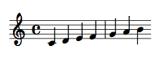
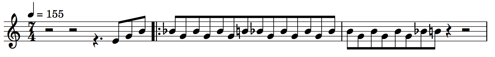

Wonder Woman Theme -- Music Engraving With Lilypond
So recently I was learning how to write MIDI music with a normal keyboard, instead of a professional MIDI keyboard, which often cost you 200-400 dollars. The music that I had in mind is the bad ass theme in the recent “Wonder Woman” movie.
It turns out that there are several matured tool for writing music with “code-like” command, such as MusiXTex and Lilypond. (For WYSIWYG folks, check out MuseScore)
However, MusiXTex, as reflected by postfix, is a music typesetting tool based on \(\TeX\). It supports almost any kind of music engraving, but it does not support MIDI output. This means that although it outputs beautifully engraved music sheets as PDF files, it cannot output MIDI files that can later be played through your MIDI software.
On the contrary, Lilypond is capable of both music engraving and MIDI creation. In fact, it is the team who created MusiXTex that created Lilypond (Years )later, after they abandoned the work of pre-processing package for MusiXTex.
Let walk through a basic Lilypond program and see how it works.
|
|
This is a HelloWorld program in Lilypond. As you might guess, the output of this program is just a sequence of notes from c(do) to b(ti):

Let’s pause it here for a moment and try to understand the difference between this and WYSIWYM
Imagine that we are not composing this simple HelloWorld music, but a much larger one. Let say the total number of notes in this piece is 1000. Now, the amount of work that you must do in a WYSIWYG application, is 1000 times of the time it takes to
- Move cursor from the last note to the current one
- Select the duration of the note (1, 1/2, 1/4 etc.)
- Confirm adding the note
I wouldn’t say that it is tremendously time-consuming, but I do get tired easily using this approach.
On the contrary, when composing in a WYSIWYM fashion, all you ever need to do is typing. The amount of work that you must do in a WYSIWYM is therefore only 1000 times of the time it takes to type a note, which (IMHO) is much quicker.
Let’s walk through the HelloWorld program we just wrote, line by line.
The first line \version "2.18.2" tells the Lilypond program what version of the compiler should this file be compiled by. However, it is fine to skip it, and Lilypond will automatically use the correct version (and warn you). I recommend always puttting that in the first line.
The second line starts with \relative c', which tells the program that whatever notes follows, intepret them using ‘relative’ mode and start with the C one octave above the middle C. The ' indicates one octave above the middle C. Analogously, '' indicates two octaves and so on. If you want to denote a C below the middle C, you may use ,. Similarly, , indicates one octave below, ,, indicates two octaves below and so on. Additionally, every note must be written in between the curly braces { and }.
The last part of the jargons is the relative mode, which means that the absolute pitch of every note should be chosen as the nearest one to the last note. For example, when we type \relative c' { e }, we unambiguously mean the E two pitches higher than C’ ( the C one octave higher than the middle C), because compared with other Es, this E is the closest one. If you need higher E(s), you can type \relative c' { e e' e'' e''' e, e,, e,,, } etc. Note that the last e,,, is actually the same as the first e.
This mode should be the most useful one, since most notes in a song are sort of close to each other, instead of sparesely distributed.
Ok, now we have the basics, let compose the Wonder Woman Theme.
The code of that theme is:
|
|
This will give us the following score:

Besides a different starting key g', there are couple of new things here:
- The
\clefcommand, which defines the clef. - The
\timecommand, which defines the time for each section. - The
\tempocommand, which defines the tempo. %, which defines a comment line.
The next three lines defines both the melody and rhythm. r means rest. Numbers (2,4,8,16 etc.) represent the denominator of the duration of the note. For example, c4 means “a C note of 1/4 time”. A single dot . means extending the previous note to its \(1+\frac{1}{2}\) duration. Similarly, two dots .. means extending the previous note to its \(1+\frac{1}{2}+\frac{1}{4}\) duration, and so on. The \bar command followed by ".|:" denotes a bold vertical with a colon. The [] command forces the enclosed notes to share the same beam. To force the beam to be upper, we use ^. To force it to be lower, we use _.
You may also notice that only some notes have time values following them, some do not. In Lilypond, notes that do not have time value inherit the time value from previous one. For example, this sequence c4 d ef g a b use 1/4 time value in all notes.
Enough of terminology, let us analyze the music. I don’t know about you, but for me, this theme song is the primary reason that I would recommand this movie. One of the reason that this theme song is so attracting, according to this youtuber.
To export this score to a MIDI file, you use the \midi command, with a proper instrument (cello today). However, I think there are enough commands to learn today, so I’ll skip explaning this command and throw you the entire code for generating both a score as PDF file and the music as a MIDI file.
|
|
Now, let’s listen to what we’ve created. (I export the music using Garageband).